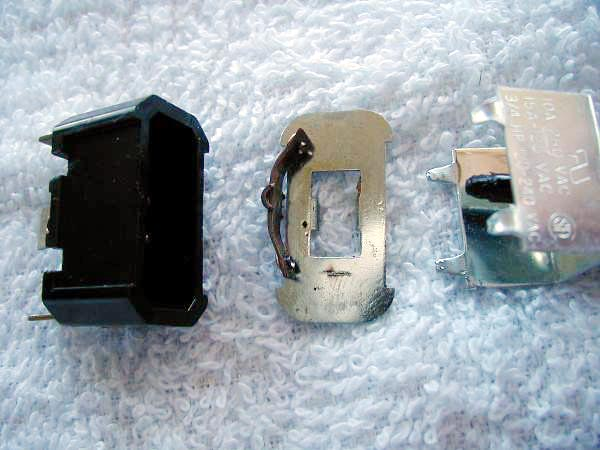
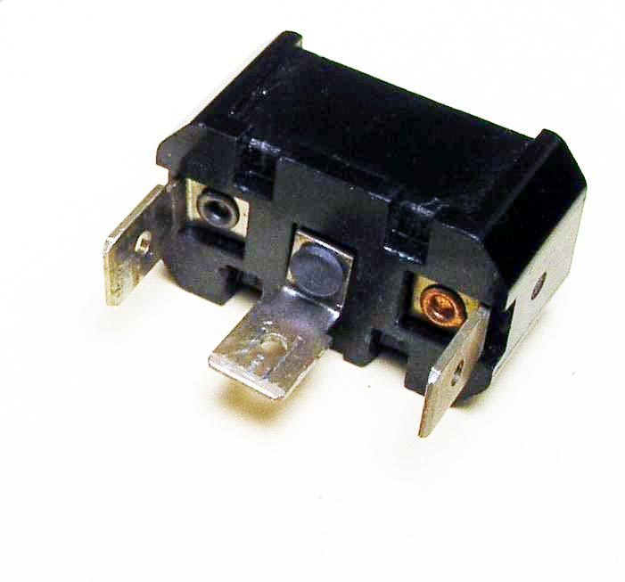
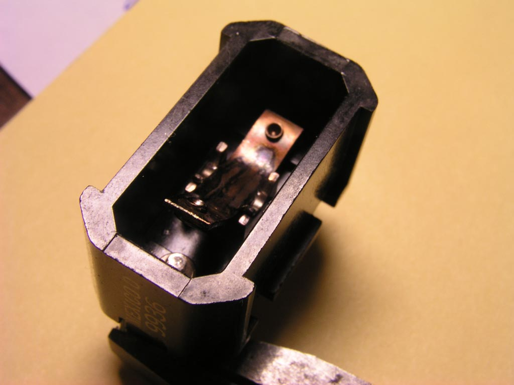
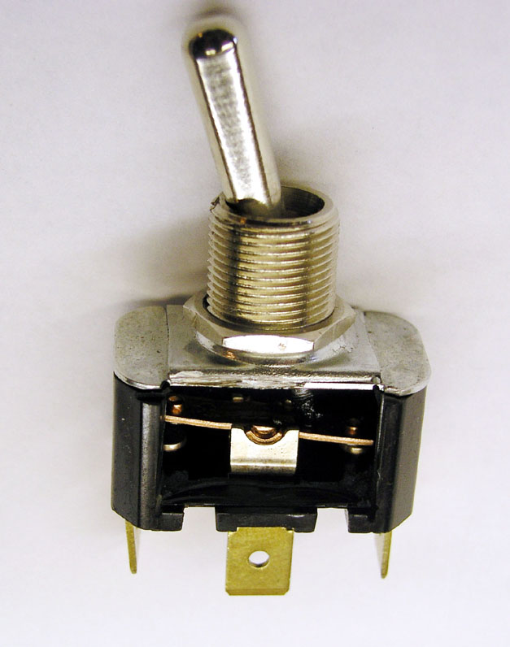
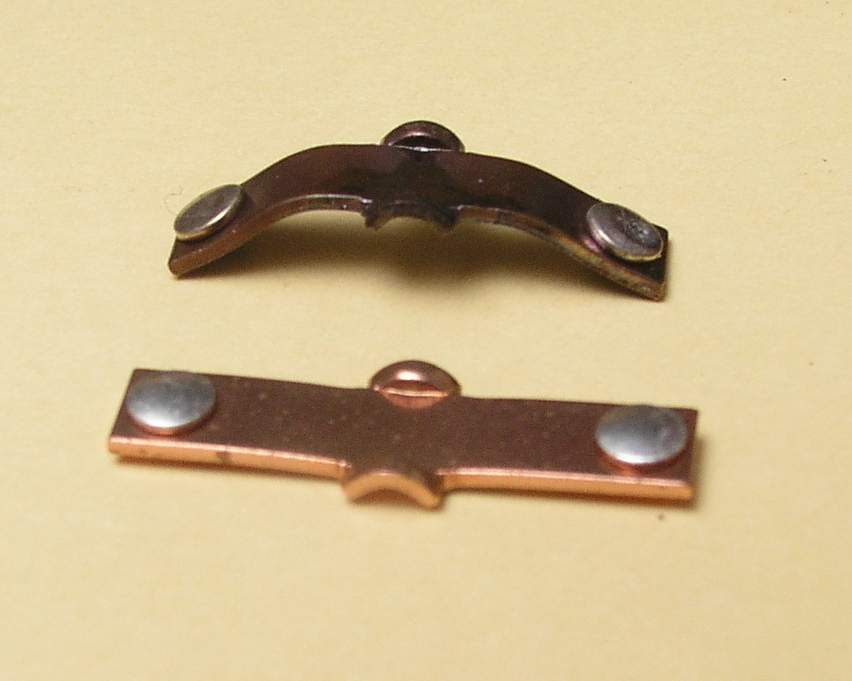
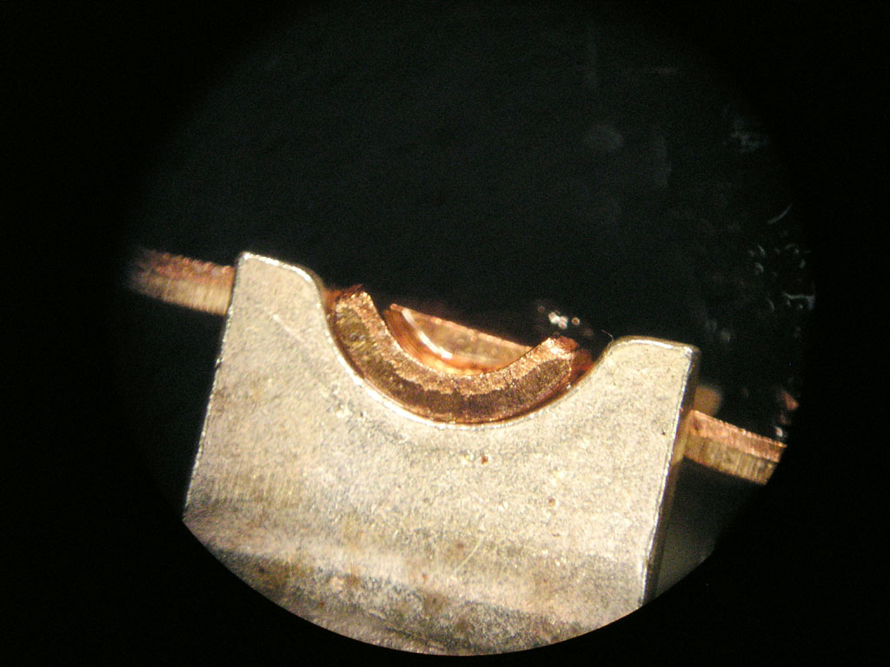
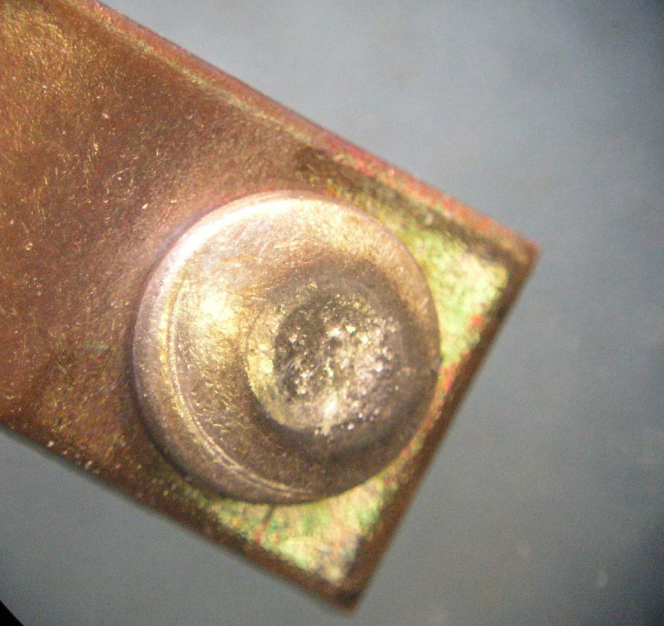
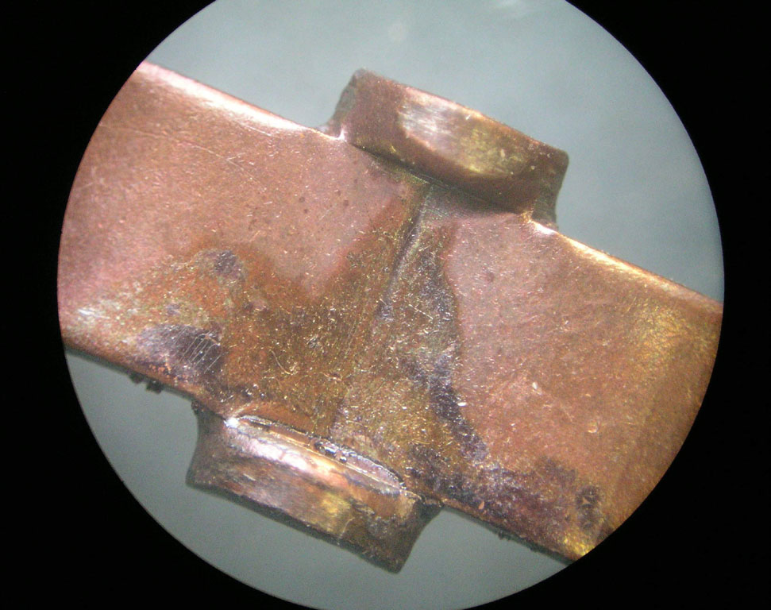

AeroElectric Connection
|
Bob's Shop Notes: |
|
Bob's Shop Notes: |
| Click Here for Larger Image  |
A member of the AeroElectric-List recently cited a startling failure
mode for a switch in his airplane. It presented an internal short to ground! I asked that he send me the corpse. He complied and added the photo you see at the left. Between the switch body at the left and the cover on the right we can see a curved contact rocker assembly and toggle guide plate with a rectangular opening. Just below the opening you can see a short burn mark the same length as the width of the contact rocker assembly. |
| Examination of the switch body shows that the two current carrying tabs of the failed switch show signs of discoloration due to heating. Rivets holding the tabs to the body are loose and there is a slight charring of the plastic housing material around the base of the center tab. | Click Here for Larger Image  |
| Click Here for Larger Image  |
When we drop the contact rocker assembly into place and position
it for the "OFF" condition, we can see that curvature of the assembly
brings one end up high enough to contact the inside surface of the
toggle guide plate. If the center tab of the switch was wire to the supply and the switch was mounted on a metalic panel attached to system ground, then placing the switch in the OFF position would produce a connection needed to cause the symptoms cited . . . a blown supply fuse. |
| Here I've sanded the side out of a new switch so that we can see the
pivot points for the contact rocker assembly. Note that in a new switch,
the rocker is flat.
|
Click Here for Larger Image  |
| Click Here for Larger Image  |
Here's a new contact rocker assembly along side the contact rocker assembly from the failed switch. An interesting thing to note is the uniformity of color on the failed rocker. Note too that curvature is relatively uniform over the entire length but slightly tighter radius of bend on the non-current- carrying side (left half) of the rocker. |
| Here's a close look at the pivot point on a new switch. Note the dis-similar metals between the two conductors at the joint. This is a good thing when you have two parts rubbing against each other. Parts of identical alloy and finish have a stronger tendency to gall at the contact points in spit of efforts to lubricate them. Note also that the radius of the contact rocker's pivot surface is slightly smaller than the radius of the pocket in the pivot point. This is also a good thing. It increases PRESSURE at the interface for improved contact reliability. | Click Here for Larger Image  |
| Click Here for Larger Image  |
Here's a close look at the current carrying contact from the failed switch. I see no signs of abuse or wearout. This switch was in service for hundreds of hours as the control for strobes. Condition of the contact suggests that the switch was being used well within it's design capabilities. No signs of overload are present. |
| A close look at the pivot point for the failed contact rocker assembly
shows signs of heating at the lower pivot. This suggests that switch failure
began at the upper pivot. Perhaps the radius of this pivot was a tad higher,
perhaps it wore a bit faster than the other side and it's radius of contact
become more like that of the pivot point pocket. In any case, the ability
to carry it's share of the loads was reduced and current flow was concentrated
in the lower pivot point having the lower resistance. This failure was that it did not progress to catastrophic loss of ability the switch to function - a secondary effect was created when the contact rocker curvature progressed far enough to cause the short circuit and pop the fuse. The switch wasn't going to run much longer but this is an interesting case where there was a race going on between two separate symptoms of switch failure (1) open contacts or (2) curvature of the rocker sufficient to cause the short. Now, had the builder simply reversed the wires going to the switch on initial assembly, the switch would still have "shorted" first . . . but it would have gone unnoticed because the short was on the load side of the switch. In this case, the switch would have lasted a few more flights before failing to operate the strobes at all. |
Click Here for Larger Image  |
This failure took many flight hours to progress to the point were first symptoms of failure were evident. The uniform curvature of the contact rocker suggests that the rocker was slowly and uniformly heated to an annealed condition where the rocker was "hammered" into a curved shape by a succession of operations between the ON and OFF states. While heating is maximum at the time the switch is moved from ON to OFF, one might expect maximum curvature to be on the OFF side where a contact rocker is being moved from ON to OFF in a heated condition. In this case, there was a bit MORE curvature on the non-current-carrying. This suggests that while the hammering forces that distorted the rocker are uniform from side to side, it had the greatest effect while the contact rocker assembly was hottest, i.e. moving from ON to OFF.
How should we react to this knowledge? I've oft suggested that switches die more often from effects of time and environment than they do for wear-out or overload. This instance is a good example. The switch was not mis-applied. It was being operated under conditions well within ratings. I'll suggest that this switch reached the end of its service life under conditions that prevailed. Should we recommend that the builder replace the switches in his airplane with devices perceived to be of higher quality? EVERY device has a service life.
This case emphasizes the value of crafting a failure tolerant system. It also illustrates the validity of a preventative maintenance practice I've suggested often: "When you experience your first switch failure, replace ALL the switches." Now, if your airplane were fitted with rows of $high$ switches - especially those with screw terminals, the idea of spending time, effort and dollars to shot-gun the whole panel with new switches is pretty daunting. But if you've installed $5 switches with fast-on terminals and hex mounting nuts, I'll suggest that you can renew every switch on the panel for less than $50 in less than an hour on a Saturday afternoon with only a nut driver for tools. You shouldn't even have to crawl under the panel.
No doubt some will counsel this builder to "get that junk off the panel and put some REAL switches in there." Bad advice? Not at all. Super-whippy switches will probably last longer. But at what cost of ownership? I'll suggest that under the failure tolerant design philosophy one can built perfectly useful systems from low cost components and not compromise safety. When the components are inexpensive -AND- easy to replace, cost of ownership goes down without compromising comfortable flight.
{kind=link}
{kind=link}
{kind=link}
{kind=link}
{kind=link}
{kind=link}
{kind=link}
{kind=link}